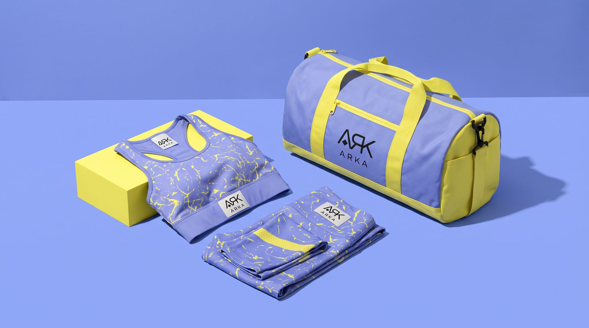
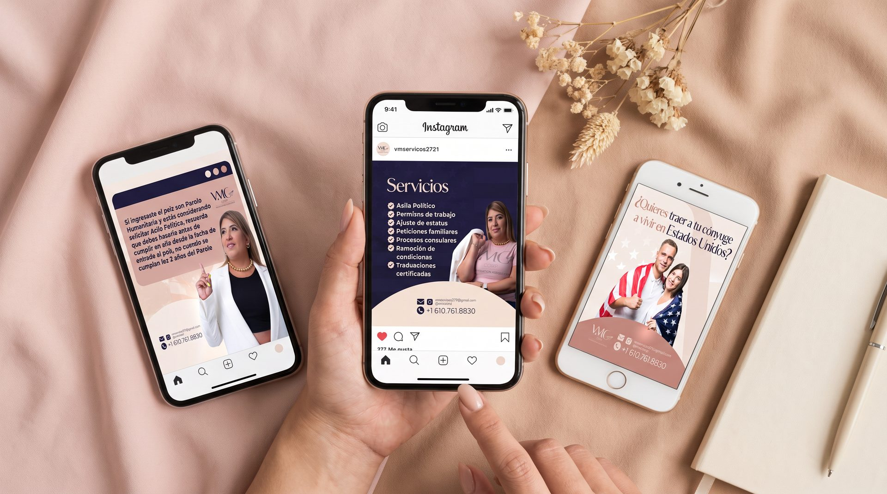

ARKA Logotipo
Custom logotype creation for ARKA, balancing architectural precision with an organic warmth that reflects the brand's core values.
ARKA's logomark needed to carry the weight of a brand with roots in craftsmanship and vision. The brief called for a geometric yet human symbol, something that could scale from a business card to a building facade without losing its essence.

- Client
- ARKA
- Service
- Logo
- Year
- 2022
A mark built to last
The final mark uses interlocking geometric forms that suggest both structure and growth. The paired logotype uses careful spacing and weight contrast to give the brand a premium, architectural feel.
Tools used
- + Adobe Illustrator


Creative process
- 1. Brief & Discovery. In-depth brand questionnaire and competitor analysis to define the logomark's visual personality.
- 2. Sketching & Concepts. Multiple sketch directions explored, from abstract geometric to letterform-based approaches.
- 3. Refinement & Delivery. Digital refinement of selected concept, final file delivery in all formats with usage guidelines.


Next project
VMC Corp
